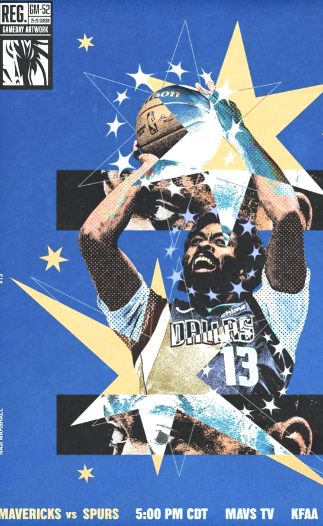
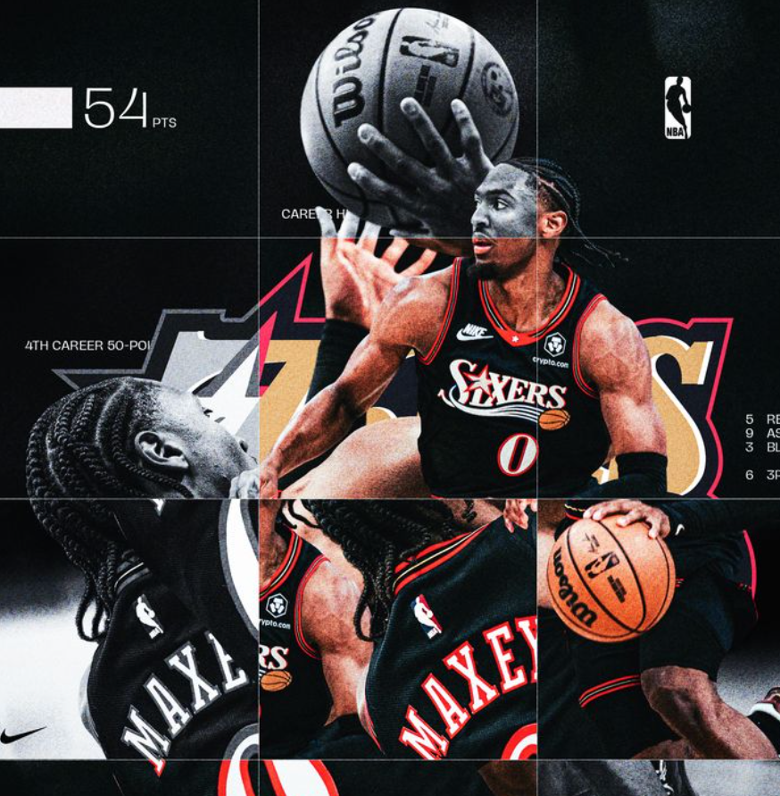
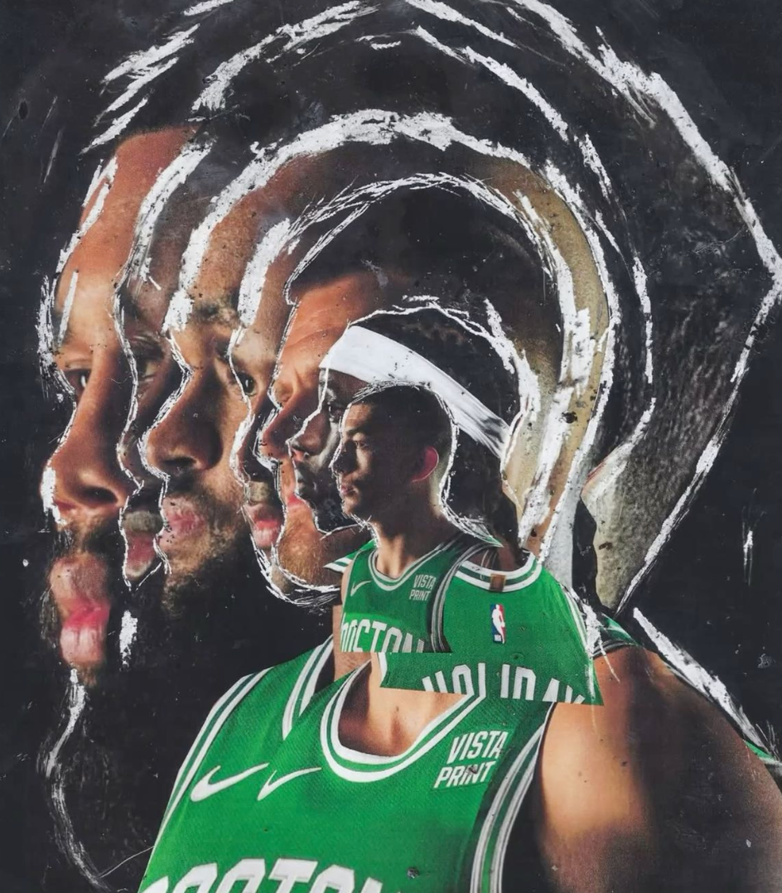

Influence beyond the stat sheet
How much does a player’s movement, spacing, or defensive presence change the opportunities available to teammates?
Basketball analytics / Data science / Research
The box score tells us what happened. I want to understand the movements, decisions, and relationships that explain why it happened.

To me, basketball is 48 minutes of chaotic synchrony. Each player affects the space, opportunities, and decisions available to everyone else on the floor.
A superstar draws an extra defender. Another player finds room to move. A help defender changes the path of a possession without recording a statistic.
Those connections are what fascinate me. Can we measure the impact of something that doesn't show up on the stat sheet?
Why I see it this way02 / The questions
These are the questions shaping the work I want to pursue. They're connected: influence changes opportunity, opportunity changes fit, and fit changes value.
How much does a player’s movement, spacing, or defensive presence change the opportunities available to teammates?
How does a player's contribution change with a different role, system, or group of teammates?
How can teams weigh projected impact against salary, roster needs, and the cost of acquiring a player?

The invisible contribution
Think about a defender who discourages a drive, or a teammate whose movement pulls someone out of position. The possession changes, even if the conventional stat sheet never names the player who made it happen.
I'm interested in the decisions that lead to the result, not just the final result itself.
Consider a ball handler drawing a double-team. Follow the sequence to see why a single possession raises difficult questions about credit and value.
Explore the sequence
Two defenders commit to the ball handler. Somewhere else, a teammate now has more room to act.
The real question: How much of the advantage belongs to the player who drew the extra defender, the teammate who finished the play, or the decisions in between?
04 / My vision
Basketball moves too quickly and too fluidly to be explained by a collection of isolated numbers. The real opportunity, as I see it, is in learning how each action changes what comes next.
I want to explore how spatial tracking, statistics, and machine learning can help us study off-ball movement, defensive positioning, and the ways teammates influence one another.
Over time, I hope to apply that understanding to a bigger challenge: predicting which players make a particular team better, and why. Not only who is talented, but who fits a system, complements a roster, and creates value relative to their cost.
This is the direction I'm working toward, not a claim that I've already built these models.

My interest in basketball is becoming a way to ask better questions through data science.
I'm Myles Magee, working toward a B.S. in Data Science at Oregon State University. I also co-founded Corner League.
My experience building in sports made me curious about what we don't measure, and why. I've always loved the game, but I'm increasingly interested in the work needed to understand it more deeply: mathematics, statistical reasoning, programming, and rigorous research.
I'm early in that journey. My goal is to keep developing the technical foundation to test my ideas, challenge assumptions, and eventually contribute to meaningful innovation in basketball analytics.
For me, this portfolio is a place to document that growth, share the questions I'm exploring, and connect with people who are thinking about where the game can go next.
Statistics & modeling R & tidyverse Machine learning Applied research
06 / Career goals
A clear goal, a flexible timeline, and real milestones toward a future in basketball analytics.
One of my biggest career goals is to work in basketball analytics, ideally with an NBA organization, and help develop new ways of understanding the game. I'm especially interested in what happens beyond the box score: spacing, defensive positioning, off-ball movement, and how one player's decision changes what everyone else can do. A player can create an advantage without scoring or even touching the ball. I want to learn how to measure that influence and eventually develop models that help teams evaluate player impact and roster fit.
To get there, I'm pursuing a B.S. in Data Science at Oregon State University, with an expected graduation of Fall 2029. I'm building my foundation in statistics and programming, especially through R and the tidyverse, where I've practiced cleaning data and creating visualizations. I also want to strengthen my Python, SQL, and machine learning skills so I can work with more complex basketball datasets and test ideas instead of relying on assumptions.
My earlier job-posting analysis comparing a Los Angeles Sparks basketball operations role with a Dodgers analyst role made one thing clear: technical ability matters, but communication is just as important. If I can't explain why an analysis matters to coaches or decision-makers, it won't have much impact. Co-founding Corner League also taught me how important it is to turn ideas into something people can actually use.
Rather than leave this as a long-term ambition, I'm setting milestones. By the end of 2027, I want to publish a reproducible basketball analysis using real play-by-play data, with clear visuals and documented code. By the end of 2028, I want two additional projects and to apply for research or internships, including OSU's URSA Engage program. By Fall 2029, I want a portfolio that shows how I approach questions, test conclusions, and communicate what I find. The plan can change, but these milestones give me something concrete to work toward.
Earlier coursework: job-posting skills analysis ↗My perspective, in full
My essay takes a deeper look at player influence, defensive decisions, team fit, and the value traditional numbers can miss.